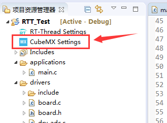
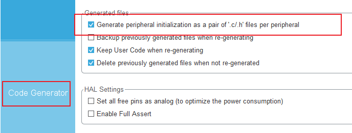

官方文档介绍：RT-Thread 文档中心
# 各模块 API 接口
由于 RT-Thread 实时操作系统跟各大类 RTOS 应用原理大致相同，因此不再详述各模块功能的作用了（各模块功能的详细信息可参考以前的 《FreeRTOS 专栏》），只总结各类功能接口的 API 调用函数。
官方 API 参考手册：RT-Thread API 参考手册

# 线程管理
# A、线程使用

| 函数功能 | API 接口 | 函数描述 | 与 FreeRTOS 相匹配的函数 |
|---|---|---|---|
| 创建线程 | rt_thread_t rt_thread_create(const char *name, void (*entry)(void *parameter), void *parameter, rt_uint32_t stack_size, rt_uint8_t priority, rt_uint32_t tick); | 该函数将从动态堆内存中创建一个线程对象并分配线程对象内存和堆栈。 | xTaskCreate() |
| 删除线程 | rt_err_t rt_thread_delete(rt_thread_t thread); | 调用该函数后，线程对象将会被移出线程队列并且从内核对象管理器中删除，线程占用的堆栈空间也会被释放，收回的空间将重新用于其他的内存分配。 | vTaskDelete() |
| 初始线程 | rt_err_t rt_thread_init(struct rt_thread *thread, const char *name, void (*entry)(void *parameter), void *parameter, void *stack_start, rt_uint32_t stack_size, rt_uint8_t priority, rt_uint32_t tick); | 使用该函数创建的线程，线程句柄 (或者说线程控制块指针) 、线程栈所占用的内存空间，均通过全局变量的方式进行分配，内核不负责动态分配内存空间（即由用户提供，属于静态分配，在编译时就被确定、被分配处理）。 | xTaskCreateStatic() |
| 脱离线程 | rt_err_t rt_thread_detach (rt_thread_t thread); | 与 rt_thread_delete () 函数相对应，使线程对象在线程队列和内核对象管理器中被脱离。注：线程本身不应调用这个接口脱离线程本身 | vTaskDelete() |
| 启动线程 | rt_err_t rt_thread_startup(rt_thread_t thread); | 当调用这个函数时，将把线程的状态更改为就绪状态，并放到相应优先级队列中等待调度。 | |
| 线程睡眠 | rt_err_t rt_thread_sleep(rt_tick_t tick); rt_err_t rt_thread_delay(rt_tick_t tick); rt_err_t rt_thread_mdelay(rt_int32_t ms); | 这三个函数接口的作用相同，调用它们可以使当前线程挂起一段指定的时间，当这个时间过后，线程会被唤醒并再次进入就绪状态。 | vTaskDelay() |
# B、挂起和恢复
线程挂起的函数接口：
rt_err_t rt_thread_suspend (rt_thread_t thread);线程挂起接口 rt_thread_suspend () 的参数和返回值见下表：
参数 描述 thread 线程句柄 返回 —— RT_EOK 线程挂起成功 RT_ERROR 线程挂起失败，因为该线程的状态并不是就绪状态 线程恢复的函数接口：
rt_err_t rt_thread_resume (rt_thread_t thread);线程恢复接口 rt_thread_resume () 的参数和返回值见下表：
参数 描述 thread 线程句柄 返回 —— RT_EOK 线程恢复成功 RT_ERROR 线程恢复失败，因为该个线程的状态并不是 RT_THREAD_SUSPEND 状态
以上这两个函数类似于 FreeRTOS 篇章之临界区与调度器 里面的调度器中的操作，但其要求并不一样。
# 信号量

| 函数功能 | API 接口 | 函数描述 | 与 FreeRTOS 相匹配的函数 |
|---|---|---|---|
| 创建信号量 | rt_sem_t rt_sem_create(const char *name, rt_uint32_t value, rt_uint8_t flag); | 系统动态分配一个 semaphore 对象，并初始化这个对象，然后初始化父类 IPC 对象以及与 semaphore 相关的部分。 | xSemaphoreCreateBinary() |
| 删除信号量 | rt_err_t rt_sem_delete(rt_sem_t sem); | 通过删除信号量以释放系统资源，适用于动态创建的信号量。 | vSemaphoreDelete() |
| 初始信号量 | rt_err_t rt_sem_init(rt_sem_t sem, const char *name, rt_uint32_t value, rt_uint8_t flag); | 属于静态分配，它的内存空间在编译时期就被编译器分配出来，放在读写数据段或未初始化数据段上。 | xSemaphoreCreateBinaryStatic() |
| 脱离信号量 | rt_err_t rt_sem_detach(rt_sem_t sem); | 让信号量对象从内核对象管理器中脱离，适用于静态初始化的信号量。 | vSemaphoreDelete() |
| 获取信号量 | rt_err_t rt_sem_take (rt_sem_t sem, rt_int32_t time); | 通过获取信号量来获得信号量资源实例，当信号量值大于零时，线程将获得信号量，并且相应的信号量值会减 1。 | xSemaphoreTake() / xSemaphoreTakeFromISR() |
| 无等待获取信号量 | rt_err_t rt_sem_trytake(rt_sem_t sem); | 与 rt_sem_take(sem, RT_WAITING_NO) 的作用相同，即当线程申请的信号量资源实例不可用的时候，它不会等待在该信号量上，而是直接返回 - RT_ETIMEOUT 。 | |
| 释放信号量 | rt_err_t rt_sem_release(rt_sem_t sem); | 释放之前所获得的信号量资源实例。 | xSemaphoreGive() / xSemaphoreGiveFromISR() |
# 互斥量

| 函数功能 | API 接口 | 函数描述 | 与 FreeRTOS 相匹配的函数 |
|---|---|---|---|
| 创建互斥量 | rt_mutex_t rt_mutex_create (const char *name, rt_uint8_t flag); | 系统将先从对象管理器中动态分配一个 mutex 对象，并初始化这个对象，然后初始化父类 IPC 对象以及与 mutex 相关的部分。 | xSemaphoreCreateMutex() |
| 删除互斥量 | rt_err_t rt_mutex_delete (rt_mutex_t mutex); | 通过删除互斥量以释放系统资源，适用于动态创建的互斥量。 | vSemaphoreDelete() |
| 初始互斥量 | rt_err_t rt_mutex_init (rt_mutex_t mutex, const char *name, rt_uint8_t flag); | 属于静态分配，它的内存空间在编译时期就被编译器分配出来，放在读写数据段或未初始化数据段上。 | xSemaphoreCreateMutexStatic() |
| 脱离互斥量 | rt_err_t rt_mutex_detach (rt_mutex_t mutex); | 把互斥量对象从内核对象管理器中脱离，适用于静态初始化的互斥量。 | vSemaphoreDelete() |
| 获取互斥量 | rt_err_t rt_mutex_take (rt_mutex_t mutex, rt_int32_t time); | 当线程获取了互斥量，那么线程就有了对该互斥量的所有权，即某一个时刻一个互斥量只能被一个线程持有。 | xSemaphoreTake() |
| 无等待获取互斥量 | rt_err_t rt_mutex_trytake(rt_mutex_t mutex); | 与 rt_mutex_take(mutex, RT_WAITING_NO) 的作用相同，即当线程申请的互斥量资源实例不可用的时候，它不会等待在该互斥量上，而是直接返回 - RT_ETIMEOUT 。 | |
| 释放互斥量 | rt_err_t rt_mutex_release(rt_mutex_t mutex); | 使用该函数接口时，只有已经拥有互斥量控制权的线程才能释放它，每释放一次该互斥量，它的持有计数就减 1。 | xSemaphoreGive() |
# 事件集

| 函数功能 | API 接口 | 函数描述 | 与 FreeRTOS 相匹配的函数 |
|---|---|---|---|
| 创建事件集 | rt_event_t rt_event_create(const char *name, rt_uint8_t flag); | 系统从对象管理器中动态分配事件集对象，并初始化这个对象，然后初始化父类 IPC 对象。 | xEventGroupCreate() |
| 删除事件集 | rt_err_t rt_event_delete(rt_event_t event); | 通过删除事件集对象控制块来释放系统资源，适用于动态创建的事件集。 | vEventGroupDelete() |
| 初始事件集 | rt_err_t rt_event_init(rt_event_t event, const char *name, rt_uint8_t flag); | 属于静态分配，它的内存空间在编译时期就被编译器分配出来，放在读写数据段或未初始化数据段上。 | xEventGroupCreateStatic() |
| 脱离事件集 | rt_err_t rt_event_detach(rt_event_t event); | 将该事件集从内核对象管理器中脱离，适用于静态初始化的事件集。 | vEventGroupDelete() |
| 发送事件 | rt_err_t rt_event_send(rt_event_t event, rt_uint32_t set); | 通过参数 set 指定的事件标志来设定 event 事件集对象的事件标志值，然后遍历等待在 event 事件集对象上的等待线程链表，判断是否有线程的事件激活要求与当前 event 对象事件标志值匹配，如果有，则唤醒该线程。 | xEventGroupSetBits() / xEventGroupSetBitsFromISR() |
| 接收事件 | rt_err_t rt_event_recv(rt_event_t event, rt_uint32_t set, rt_uint8_t option, rt_int32_t timeout, rt_uint32_t *recved); | 系统首先根据 set 参数和接收选项 option 来判断它要接收的事件是否发生，如果已经发生，则根据参数 option 上是否设置有 RT_EVENT_FLAG_CLEAR 来决定是否重置事件的相应标志位，然后返回（其中 recved 参数返回接收到的事件）；如果没有发生，则把等待的 set 和 option 参数填入线程本身的结构中，然后把线程挂起在此事件上，直到其等待的事件满足条件或等待时间超过指定的超时时间。如果超时时间设置为零，则表示当线程要接受的事件没有满足其要求时就不等待，而直接返回 - RT_ETIMEOUT 。 | xEventGroupWaitBits() |
# 邮箱

| 函数功能 | API 接口 | 函数描述 | 与 FreeRTOS 相匹配的函数 |
|---|---|---|---|
| 创建邮箱 | rt_mailbox_t rt_mb_create (const char *name, rt_size_t size, rt_uint8_t flag); | 创建邮箱对象时会先从对象管理器中分配一个邮箱对象，然后给邮箱动态分配一块内存空间用来存放邮件，这块内存的大小等于邮件大小（4 字节）与邮箱容量的乘积，接着初始化接收邮件数目和发送邮件在邮箱中的偏移量。 | xQueueCreate() |
| 删除邮箱 | rt_err_t rt_mb_delete (rt_mailbox_t mb); | 释放相应的系统资源，当操作一旦完成，邮箱将被永久性的删除。 | vQueueDelete() |
| 初始邮箱 | rt_err_t rt_mb_init(rt_mailbox_t mb, const char *name, void *msgpool, rt_size_t size, rt_uint8_t flag); | 属于静态分配，与创建邮箱不同的是，静态邮箱对象的内存是在系统编译时由编译器分配的，一般放于读写数据段或未初始化数据段中，其余的初始化工作与创建邮箱时相同。 | xQueueCreateStatic() |
| 脱离邮箱 | rt_err_t rt_mb_detach(rt_mailbox_t mb); | 把静态初始化的邮箱对象从内核对象管理器中脱离。 | vQueueDelete() |
| 发送邮件 | rt_err_t rt_mb_send (rt_mailbox_t mb, rt_uint32_t value); | 发送的邮件可以是 32 位任意格式的数据，一个整型值或者一个指向缓冲区的指针；当邮箱中的邮件已经满时，发送邮件的线程或者中断程序会收到 - RT_EFULL 的返回值。 | xQueueOverwrite() / xQueueOverwriteFromISR() |
| 等待方式发送邮件 | rt_err_t rt_mb_send_wait (rt_mailbox_t mb, rt_uint32_t value, rt_int32_t timeout); | 与 rt_mb_send () 的区别在于有等待时间，如果邮箱已经满了，那么发送线程将根据设定的 timeout 参数等待邮箱中因为收取邮件而空出空间；如果设置的超时时间到达依然没有空出空间，这时发送线程将被唤醒并返回错误码。 | |
| 发送紧急邮件 | rt_err_t rt_mb_urgent (rt_mailbox_t mb, rt_ubase_t value); | 与发送邮件几乎一样，唯一的不同是，当发送紧急邮件时，邮件被直接插队放入了邮件队首，这样，接收者就能够优先接收到紧急邮件，从而及时进行处理。 | |
| 接收邮件 | rt_err_t rt_mb_recv (rt_mailbox_t mb, rt_uint32_t *value, rt_int32_t timeout); | 只有当接收者接收的邮箱中有邮件时，接收者才能立即取到邮件并返回 RT_EOK 的返回值，否则接收线程会根据超时时间设置，或挂起在邮箱的等待线程队列上，或直接返回。 | xQueueReceive() / xQueueReceiveFromISR() |
对比：FreeRTOS 篇章之队列管理 中的消息数目为 1 的队列
注：由于 FreeRTOS 中并没有邮箱这一概念（邮箱这概念在 uCOS 中有），但是其原理类似于利用队列发送单一数目的信息，由于在 32 系统上 4 字节（32 bit）的内容恰好可以放置一个指针，因此该信息通常为数据指针。
# 消息队列

| 函数功能 | API 接口 | 函数描述 | 与 FreeRTOS 相匹配的函数 |
|---|---|---|---|
| 创建队列 | rt_mq_t rt_mq_create(const char *name, rt_size_t msg_size, rt_size_t max_msgs, rt_uint8_t flag); | 从对象管理器中动态分配一个消息队列对象，然后给消息队列对象分配一块内存空间，组织成空闲消息链表，这块 内存的大小 = [消息大小 + 消息头（用于链表连接）的大小] x 消息队列最大个数 ，接着再初始化消息队列，此时消息队列为空。 | xQueueCreate() |
| 删除队列 | rt_err_t rt_mq_delete(rt_mq_t mq); | 删除它以释放系统资源，一旦操作完成，消息队列将被永久性地删除。 | vQueueDelete() |
| 初始队列 | rt_err_t rt_mq_init(rt_mq_t mq, const char *name, void *msgpool, rt_size_t msg_size, rt_size_t pool_size, rt_uint8_t flag); | 属于静态分配，跟创建消息队列对象类似，只是静态消息队列对象的内存是在系统编译时由编译器分配的，一般放于读数据段或未初始化数据段中。 | xQueueCreateStatic() |
| 脱离队列 | rt_err_t rt_mq_detach(rt_mq_t mq); | 将使消息队列对象被从内核对象管理器中脱离。 | vQueueDelete() |
| 发送信息 | rt_err_t rt_mq_send (rt_mq_t mq, void *buffer, rt_size_t size); | 线程或者中断服务程序都可以给消息队列发送消息。当发送消息时，消息队列对象先从空闲消息链表上取下一个空闲消息块，把线程或者中断服务程序发送的消息内容复制到消息块上，然后把该消息块挂到消息队列的尾部。当且仅当空闲消息链表上有可用的空闲消息块时，发送者才能成功发送消息；当空闲消息链表上无可用消息块，说明消息队列已满，此时，发送消息的的线程或者中断程序会收到一个错误码（- RT_EFULL ）。 | xQueueSend() / xQueueSendFromISR() xQueueSendToFront() / xQueueSendToFrontFromISR() |
| 等待方式发送信息 | rt_err_t rt_mq_send_wait(rt_mq_t mq, const void *buffer, rt_size_t size, rt_int32_t timeout); | 与 rt_mq_send () 的区别在于有等待时间，如果消息队列已经满了，那么发送线程将根据设定的 timeout 参数进行等待。如果设置的超时时间到达依然没有空出空间，这时发送线程将被唤醒并返回错误码。 | |
| 发送紧急信息 | rt_err_t rt_mq_urgent(rt_mq_t mq, void *buffer, rt_size_t size); | 与发送消息几乎一样，唯一的不同是，当发送紧急消息时，从空闲消息链表上取下来的消息块不是挂到消息队列的队尾，而是挂到队首，这样，接收者就能够优先接收到紧急消息，从而及时进行消息处理。 | |
| 接收信息 | rt_err_t rt_mq_recv (rt_mq_t mq, void *buffer, rt_size_t size, rt_int32_t timeout); | 当消息队列中有消息时，接收者才能接收消息，否则接收者会根据超时时间设置，或挂起在消息队列的等待线程队列上，或直接返回。 | xQueueReceive() / xQueueReceiveFromISR() |
# 中断管理

对于上图，通常用的较多的是：
# 全局中断开关
全局中断开关也称为中断锁，是禁止多线程访问临界区最简单的一种方式，即通过关闭中断的方式，来保证当前线程不会被其他事件打断（因为整个系统已经不再响应那些可以触发线程重新调度的外部事件），也就是当前线程不会被抢占，除非这个线程主动放弃了处理器控制权。
| 函数功能 | API 接口 | 函数描述 | 与 FreeRTOS 相匹配的函数 |
|---|---|---|---|
| 关闭整个系统的中断 | rt_base_t rt_hw_interrupt_disable(void); | 关闭整个系统的中断 | taskENTER_CRITICAL() / taskENTER_CRITICAL_FROM_ISR() |
| 恢复整个系统的中断 | void rt_hw_interrupt_enable(rt_base_t level); | 恢复系统的上一个中断状态 | taskEXIT_CRITICAL() / taskEXIT_CRITICAL_FROM_ISR( x ) |
（1）rt_hw_interrupt_disable () API 函数
原型： rt_base_t rt_hw_interrupt_disable(void);
返回参数：
- rt_hw_interrupt_disable 函数运行前的中断状态
（2）rt_hw_interrupt_enable () API 函数
原型： void rt_hw_interrupt_enable(rt_base_t level);
输入参数：
- 前一次 rt_hw_interrupt_disable 返回的中断状态
注：在这里就相当于 FreeRTOS 篇章之临界区与调度器 里面的临界段中的操作。
# 中断通知
当整个系统被中断打断，进入中断处理函数时，需要通知内核当前已经进入到中断状态。
针对这种情况，RT-Thread 提供如下两个接口：
void rt_interrupt_enter(void); // 用于通知内核，当前已经进入了中断状态，并增加中断嵌套深度（执行 rt_interrupt_nest++） | |
void rt_interrupt_leave(void); // 用于通知内核，当前已经离开了中断状态，并减少中断嵌套深度（执行 rt_interrupt_nest--） | |
注：不要在应用程序中调用这两个接口函数。 |
其实这两个函数等同于 FreeRTOS 中带 FromISR 后缀的函数说明。
# RT-Thread Studio 上手
安装及环境搭建过程可以直接参看官方的指导文档：RT-Thread Studio 使用文档
以下只是简单记录部分关键点：
# 控制台调试口修改
在新建项目过程中，可从 GUI 窗口中选择配置，如下图：

当后期需要重新分配时，则需要在代码和 RT-Thread setting 中修改了，（以修改为 UART 3 为例）修改内容如下：

# 串口终端集成显示
在 RT-Thread Studio 上，是可以通过点击工具栏 终端 按钮，来打开对应的终端功能窗口查看输出信息的，并且同样支持与 RT-Thread 特有的 finsh 命令进行交互，串口终端显示操作如下：


# 与 CubeMX 联合编程
此操作的前提条件是已经安装了 STM32CubeMX
# A、启动 CubeMX settings 配置
新建的工程，都是优先使用内部时钟源（如下图），但实际情况下，大部分是使用外部时钟的，因为其稳定性比较好；因此，以修改外部时钟为例。

由于 RT-Thread Studio 支持与 CubeMX 联合编程，所以我们只需在项目资源管理器中启动 CubeMX settings 进行配置就好（如下图），进入界面后，其操作实际等同于操作 STM32CubeMX。

# B、CubeMX settings 配置生成注意点
尽量生成 GCC 工程，因为 RT-Thread Studio 用的是 gcc 编译器

选择生成独立的 .c .h 文件
生成完成后返回界面，会提示替换了
stm32xxx_hal_conf.h文件，因此，我们需要把原来的配置，同步过去，该哪些配置需要打开的，都一一打开。

# C、添加编译规则
在生成 CubeMX 产生的工程后，打开 drv_clk.c 文件，你会发现 clk_init() 函数里面被自动更改了（如下图）；这也就意味着什么呢？记得备份啦，或者上 git /svn 进行版本管理啦。

于是乎，对工程进行编译时，发现一堆报错，不禁怀疑 RT-Thread Studio 是否支持与 CubeMX 联合编程的。。。
在这里就需要对编译做相关操作了：
（1）在生成的 cubemx 文件夹里，先检查 cubemx 文件夹下有没有 SConscript 文件，如果有就跳过创建环节，检查内容。
（2）核查并更改 SConscript 文件里面的内容。
（3）有时候在生成 CubeMX 产生的工程后，RT-Thread Studio 会帮你生成一个 SConscript 文件，并写好了规则，如果是已有的，那么可以尝试先编译一下是否有新增的源码进行编译，如果没有，那么可以仿照如下的代码进行修改：

其中，上面规则里的 src 部分，需要根据实际内容增删需要编译的源文件（如下）：
src = Split(''' | |
Src/stm32g4xx_hal_msp.c | |
Src/main.c | |
Src/dma.c | |
Src/gpio.c | |
Src/usart.c | |
''') |
当然，为了一劳永逸，你也可以把它修改成这样子：
# 引入 building 模块中所有的东西 | |
from building import * | |
# 获取当前路径。 | |
cwd = GetCurrentDir() | |
# 使能选择 | |
search_EN = 1 | |
# add cubemx drivers | |
# search_EN 为 0 时，手动选择添加需要编译的源文件 | |
# search_EN 为 1 时，自动搜寻与 SrcRemove 匹配以外的源文件 | |
if (0 == search_EN): | |
src = Split(''' | |
Src/stm32f4xx_hal_msp.c | |
Src/main.c | |
''') | |
else: | |
src = Glob('Src/*.c') | |
SrcRemove(src, ['Src/stm32f4xx_it.c']) | |
SrcRemove(src, ['Src/system_stm32f4xx.c']) | |
# 创建头文件路径列表，并保存至 path 中 | |
path = [cwd + '/Inc'] | |
# 这是 RT-Thread 基于 SCons 扩展的一个方法（函数）。 | |
group = DefineGroup('cubemx', src, depend = [''], CPPPATH = path) | |
Return('group') |
通过上面，你可能发现，为什么文件中的 stm32f4xx_it.c 和 system_stm32f4xx.c 不加入构建；其实你可以尝试一下加入编译一下，你就会发现玄机了。
更多的关于 SCons 工具的使用可以观看如下链接：
https://www.rt-thread.org/document/site/#/development-tools/scons/scons?id=scons-%e7%ae%80%e4%bb%8b
https://scons.org/doc/production/HTML/scons-user/index.html
最后记得更新 Sconscripts（在项目资源管理器选择目标工程 -> 右键 -> 更新 Sconscripts ）：

# D、迁移 CubeMX 产生的代码
当完成上面操作后，再次构建工程，或多或少还会出现错误，大概率是函数重复定义导致，比如 multiple definition of main 。这时候可以如下操作：

嘛，或许有时候在 CubeMX 初次生成的 main () 函数上自带了 __WEAK 弱处理关键字，但后期在多次更改 CubeMX settings 配置后，会有出现去掉 __WEAK 的情况，所以为了安全，还是把 __WEAK 添加到上述的保护区域位置去吧。
除了以上情况，在 CubeMX settings 配置更多外设时，需要把 cubemx/Src 里的 main.c 文件里的配置函数，手动移加到 RT-Thread 工程的 main.c 主文件函数中（一些 RTT 配置里面有的，就不用添加过去了，避免功能出错，例如 ETH 的配置）。如下图：